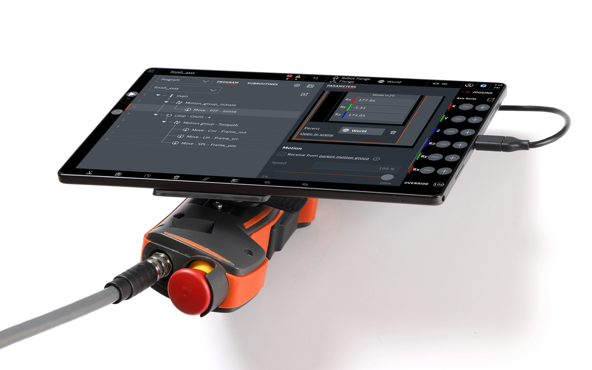
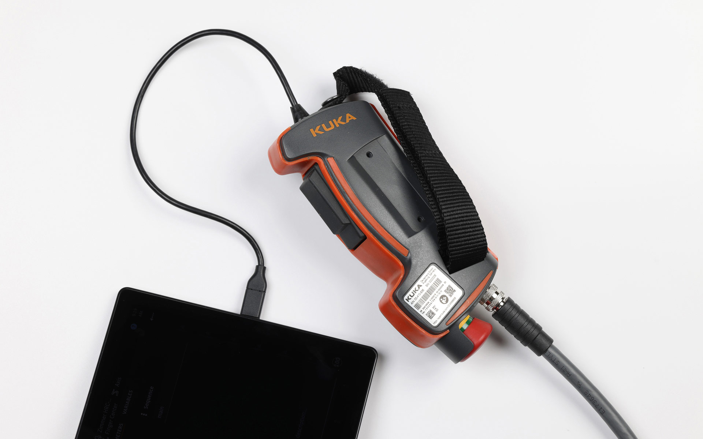
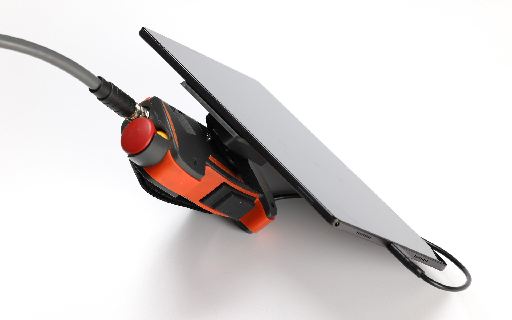
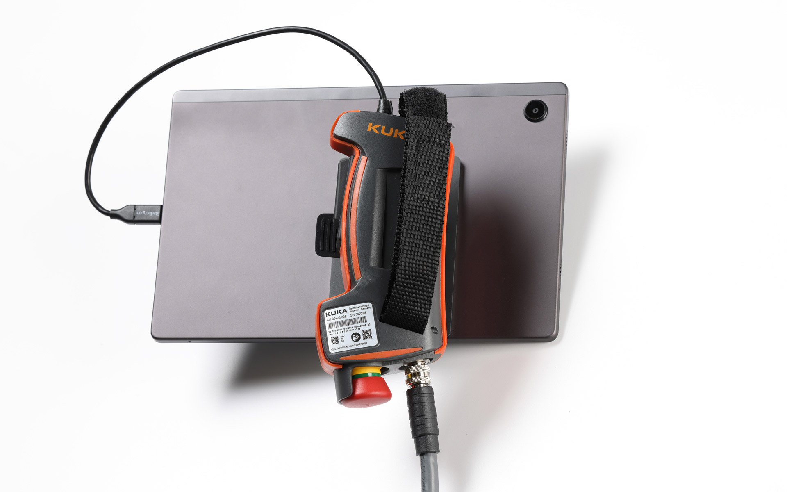

KUKA Smart Plug
Teach Pendant
KUKA Smart Plug
Roboter-Programmierpanel
The KUKA smartPLUG is a handheld device that is docked to a standard tablet and connected via a USB cable.
In this way, the KUKA robots can be programmed and operated intuitively and quickly using your own tablet
universally with Android, iOS and Windows. The USB port also allows you to connect a smartphone or laptop.
The
well-thought-out design and the easy-to-use graphical user interface make entry into the world of robots
easier than ever for the user.
The focus of the design of the smartPLUG was on the ergonomics of the device. The shape is very soft and
all
edges of the housing are rounded, so that there are no signs of fatigue or even pressure points on the
hands, even after long periods of work. The surrounding soft component increases grip and serves as a
splash
water proofed seal for the housing shells. An important design demand was that the device could be
operated
by both left- and right-handed people. To do this, the tablet mounting adapter on the smartPLUG is changed
from one side to the other. The grip area is designed to fit both large and small hands. The ergonomically
angled positioning of the tablet ensures comfortable, long-term use. Any tablet format can be connected
regardless of the brand.
Der KUKA smartPLUG ist ein Bedienhandgerät, das an ein handelsübliches Tablet angedockt und über ein USB-Kabel verbunden wird.
Auf diese Weise lassen sich die Roboter intuitiv und schnell von einem eigenen Tablet mit Android, iOS oder
Windows programmieren und bedienen. Der USB-Anschluss ermöglicht auch den Anschluss eines Smartphones oder
Laptops. Das durchdachte Design und die einfache Bedienbarkeit der grafischen Benutzeroberfläche macht
Einstieg in die Roboterwelt für dem Anwender so einfach wie nie zuvor.
Der Schwerpunkt des Designs des smartPLUGs liegt in der Ergonomie des Gerätes. Die Formgebung ist sehr
soft
und alle Gehäusekanten sind abgerundet, so dass auch nach langem Arbeiten keine Ermüdungserscheinungen
aufkommen oder gar Druckstellen an den Händen entstehen. Die umlaufende Weichkomponente erhöht die
Griffigkeit und dient als spritzwassergeprüfte Dichtung der Gehäuseschalen.
Eine wichtige Anforderung an die Gestaltung war die Bedienung des Gerätes sowohl für Links-, als auch für
Rechtshänder. Der Tablet-Befestigungsadapter wird hierzu am smartPLUG von der einen Seite auf die andere
gewechselt. Der Griffbereich ist so gestaltet, dass er für große und kleine Hände geeignet ist. Die
ergonomisch angewinkelte Positionierung des Tablets sorgt für angenehme, langzeitige Bedienung.
Beliebige Tablet-Formate können markenunabhängig angebunden werden.




Images © KUKA Deutschland GmbH